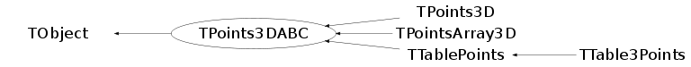

class TPoints3DABC: public TObject
The TPoints3DABC class
Function Members (Methods)
This is an abstract class, constructors will not be documented.
Look at the header to check for available constructors.
public:
| virtual | ~TPoints3DABC() |
| void | TObject::AbstractMethod(const char* method) const |
| virtual Int_t | Add(Float_t x, Float_t y, Float_t z) |
| virtual Int_t | AddLast(Float_t x, Float_t y, Float_t z) |
| virtual void | TObject::AppendPad(Option_t* option = "") |
| virtual void | TObject::Browse(TBrowser* b) |
| static TClass* | Class() |
| virtual const char* | TObject::ClassName() const |
| virtual void | TObject::Clear(Option_t* = "") |
| virtual TObject* | TObject::Clone(const char* newname = "") const |
| virtual Int_t | TObject::Compare(const TObject* obj) const |
| virtual void | TObject::Copy(TObject& object) const |
| virtual void | TObject::Delete(Option_t* option = "")MENU |
| static Int_t | DistancetoLine(Int_t px, Int_t py, Float_t x1, Float_t y1, Float_t x2, Float_t y2, Int_t lineWidth = 1) |
| virtual Int_t | DistancetoPrimitive(Int_t px, Int_t py) |
| virtual void | TObject::Draw(Option_t* option = "") |
| virtual void | TObject::DrawClass() constMENU |
| virtual TObject* | TObject::DrawClone(Option_t* option = "") constMENU |
| virtual void | TObject::Dump() constMENU |
| virtual void | TObject::Error(const char* method, const char* msgfmt) const |
| virtual void | TObject::Execute(const char* method, const char* params, Int_t* error = 0) |
| virtual void | TObject::Execute(TMethod* method, TObjArray* params, Int_t* error = 0) |
| virtual void | TObject::ExecuteEvent(Int_t event, Int_t px, Int_t py) |
| virtual void | TObject::Fatal(const char* method, const char* msgfmt) const |
| virtual TObject* | TObject::FindObject(const char* name) const |
| virtual TObject* | TObject::FindObject(const TObject* obj) const |
| virtual Option_t* | TObject::GetDrawOption() const |
| static Long_t | TObject::GetDtorOnly() |
| virtual const char* | TObject::GetIconName() const |
| virtual Int_t | GetLastPosition() const |
| virtual Int_t | GetN() const |
| virtual const char* | TObject::GetName() const |
| virtual char* | TObject::GetObjectInfo(Int_t px, Int_t py) const |
| static Bool_t | TObject::GetObjectStat() |
| virtual Option_t* | GetOption() const |
| virtual Float_t* | GetP() const |
| virtual const char* | TObject::GetTitle() const |
| virtual UInt_t | TObject::GetUniqueID() const |
| virtual Float_t | GetX(Int_t idx) const |
| virtual const Float_t* | GetXYZ(Int_t idx) |
| virtual Float_t* | GetXYZ(Float_t* xyz, Int_t idx, Int_t num = 1) const |
| virtual Float_t | GetY(Int_t idx) const |
| virtual Float_t | GetZ(Int_t idx) const |
| virtual Bool_t | TObject::HandleTimer(TTimer* timer) |
| virtual ULong_t | TObject::Hash() const |
| virtual void | TObject::Info(const char* method, const char* msgfmt) const |
| virtual Bool_t | TObject::InheritsFrom(const char* classname) const |
| virtual Bool_t | TObject::InheritsFrom(const TClass* cl) const |
| virtual void | TObject::Inspect() constMENU |
| void | TObject::InvertBit(UInt_t f) |
| virtual TClass* | IsA() const |
| virtual Bool_t | TObject::IsEqual(const TObject* obj) const |
| virtual Bool_t | TObject::IsFolder() const |
| Bool_t | TObject::IsOnHeap() const |
| virtual Bool_t | TObject::IsSortable() const |
| Bool_t | TObject::IsZombie() const |
| virtual void | TObject::ls(Option_t* option = "") const |
| void | TObject::MayNotUse(const char* method) const |
| virtual Bool_t | TObject::Notify() |
| void | TObject::Obsolete(const char* method, const char* asOfVers, const char* removedFromVers) const |
| static void | TObject::operator delete(void* ptr) |
| static void | TObject::operator delete(void* ptr, void* vp) |
| static void | TObject::operator delete[](void* ptr) |
| static void | TObject::operator delete[](void* ptr, void* vp) |
| void* | TObject::operator new(size_t sz) |
| void* | TObject::operator new(size_t sz, void* vp) |
| void* | TObject::operator new[](size_t sz) |
| void* | TObject::operator new[](size_t sz, void* vp) |
| TPoints3DABC& | operator=(const TPoints3DABC&) |
| virtual void | TObject::Paint(Option_t* option = "") |
| virtual void | PaintPoints(Int_t n, Float_t* p, Option_t* option = "") |
| virtual void | TObject::Pop() |
| virtual void | TObject::Print(Option_t* option = "") const |
| virtual Int_t | TObject::Read(const char* name) |
| virtual void | TObject::RecursiveRemove(TObject* obj) |
| void | TObject::ResetBit(UInt_t f) |
| virtual void | TObject::SaveAs(const char* filename = "", Option_t* option = "") constMENU |
| virtual void | TObject::SavePrimitive(ostream& out, Option_t* option = "") |
| void | TObject::SetBit(UInt_t f) |
| void | TObject::SetBit(UInt_t f, Bool_t set) |
| virtual void | TObject::SetDrawOption(Option_t* option = "")MENU |
| static void | TObject::SetDtorOnly(void* obj) |
| virtual Int_t | SetLastPosition(Int_t idx) |
| virtual Int_t | SetNextPoint(Float_t x, Float_t y, Float_t z) |
| static void | TObject::SetObjectStat(Bool_t stat) |
| virtual void | SetOption(Option_t* option = "") |
| virtual Int_t | SetPoint(Int_t point, Float_t x, Float_t y, Float_t z) |
| virtual Int_t | SetPoints(Int_t n, Float_t* p = 0, Option_t* option = "") |
| virtual void | TObject::SetUniqueID(UInt_t uid) |
| virtual void | ShowMembers(TMemberInspector& insp) |
| virtual Int_t | Size() const |
| virtual void | Streamer(TBuffer& b) |
| void | StreamerNVirtual(TBuffer& b) |
| virtual void | TObject::SysError(const char* method, const char* msgfmt) const |
| Bool_t | TObject::TestBit(UInt_t f) const |
| Int_t | TObject::TestBits(UInt_t f) const |
| virtual void | TObject::UseCurrentStyle() |
| virtual void | TObject::Warning(const char* method, const char* msgfmt) const |
| virtual Int_t | TObject::Write(const char* name = 0, Int_t option = 0, Int_t bufsize = 0) |
| virtual Int_t | TObject::Write(const char* name = 0, Int_t option = 0, Int_t bufsize = 0) const |
protected:
| virtual void | TObject::DoError(int level, const char* location, const char* fmt, va_list va) const |
| void | TObject::MakeZombie() |
Data Members
public:
| enum TObject::EStatusBits { | kCanDelete | |
| kMustCleanup | ||
| kObjInCanvas | ||
| kIsReferenced | ||
| kHasUUID | ||
| kCannotPick | ||
| kNoContextMenu | ||
| kInvalidObject | ||
| }; | ||
| enum TObject::[unnamed] { | kIsOnHeap | |
| kNotDeleted | ||
| kZombie | ||
| kBitMask | ||
| kSingleKey | ||
| kOverwrite | ||
| kWriteDelete | ||
| }; |
Class Charts
{kind=link}
{kind=link}
{kind=link}
{kind=link}

Function documentation
Int_t Add(Float_t x, Float_t y, Float_t z)
Add one 3D point defined by x,y,z to the array of the points as its last element
Int_t AddLast(Float_t x, Float_t y, Float_t z)
Add one 3D point defined by x,y,z to the array of the points as its last element
Int_t DistancetoLine(Int_t px, Int_t py, Float_t x1, Float_t y1, Float_t x2, Float_t y2, Int_t lineWidth = 1)
Compute distance from point px,py to an axis of the band defined.
by pair points (x1,y1),(x2,y2) where lineWidth is the width of the band
Compute the closest distance of approach from point px,py to this line.
The distance is computed in pixels units.
Algorithm:
A(x1,y1) P B(x2,y2)
I
I
I
I
M(x,y)
Let us call a = distance AM a2=a**2
b = distance BM b2=b**2
c = distance AB c2=c**2
d = distance PM d2=d**2
u = distance AP u2=u**2
v = distance BP v2=v**2 c = u + v
d2 = a2 - u2
d2 = b2 - v2 = b2 -(c-u)**2
==> u = (a2 -b2 +c2)/2c
Float_t x1 = gPad->XtoAbsPixel(xp1);
Float_t y1 = gPad->YtoAbsPixel(yp1);
Float_t x2 = gPad->XtoAbsPixel(xp2);
Float_t y2 = gPad->YtoAbsPixel(yp2);
Int_t SetNextPoint(Float_t x, Float_t y, Float_t z)
Add one 3D point defined by x,y,z to the array of the points as its last element
Float_t * GetXYZ(Float_t* xyz, Int_t idx, Int_t num = 1) const
GetXYZ(Float_t *xyz,Int_t idx,Int_t num=1) fills the buffer supplied by the calling code with the points information. Input parameters: Float_t *xyz - an external user supplied floating point array. Int_t num - the total number of the points to be copied the dimension of that array the size of the array is num*sizeof(Float_t) at least Int_t idx - The index of the first copy to be taken. Return: The pointer to the buffer array supplied
Int_t DistancetoPrimitive(Int_t px, Int_t py)
Int_t GetLastPosition() const
void PaintPoints(Int_t n, Float_t* p, Option_t* option = "")
Int_t SetLastPosition(Int_t idx)